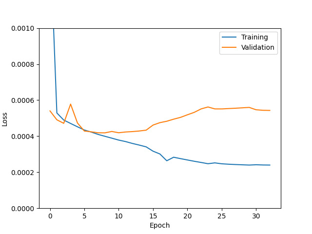

This table shows slightly different UNets for the physics-based pipeline.
| UNet | Training size | Batch size | True positive rates | Comments | Loss curve |
|---|---|---|---|---|---|
| Batch size 4 | 10^5 | 4 | 0.155, 0.293, 0.480, 0.624 |  | |
| Batch size 8 | 10^5 | 8 | 0.148, 0.296, 0.493, 0.634 | ||
| Batch size 16 | 10^5 | 16 | 0.156, 0.299, 0.460, 0.617 |